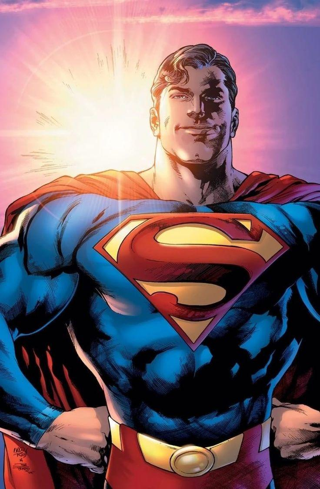
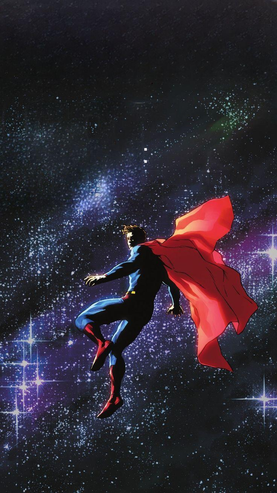
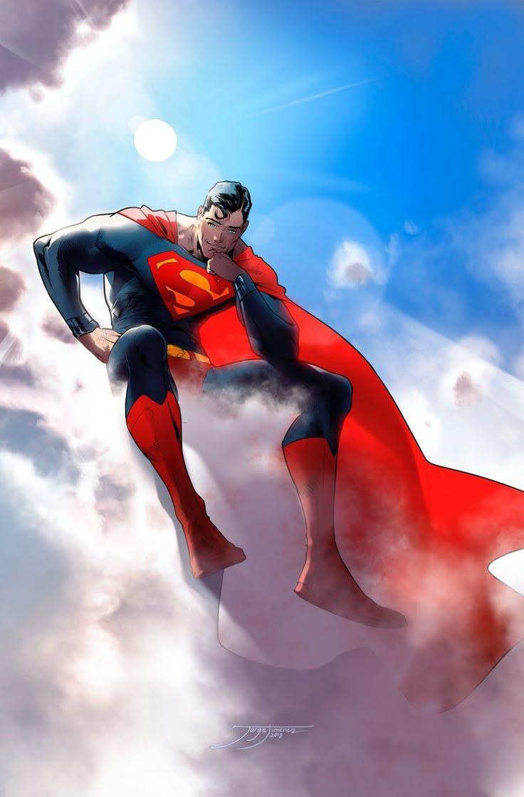
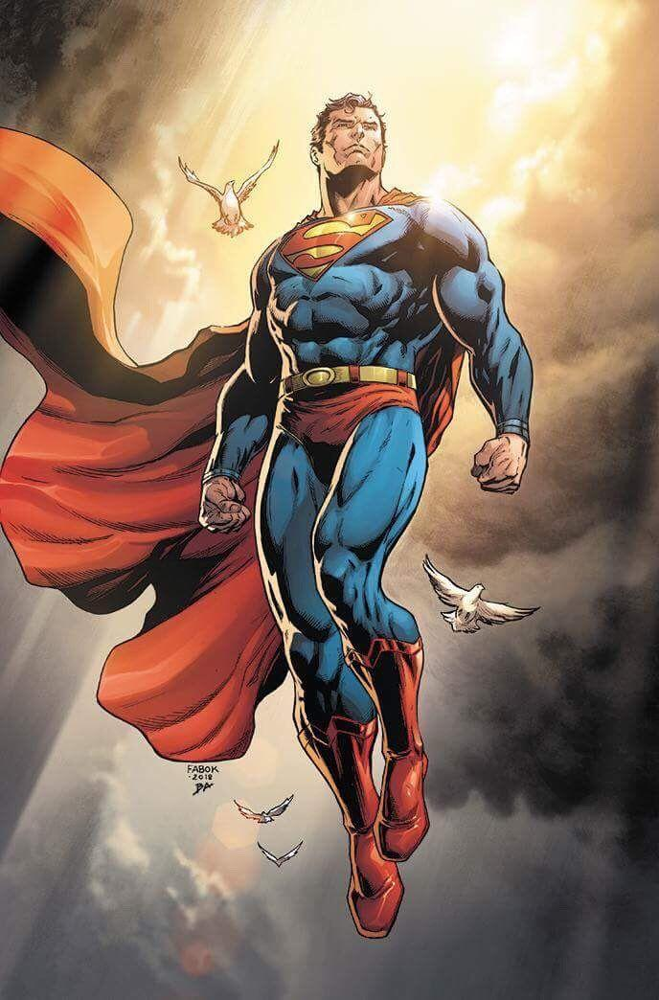
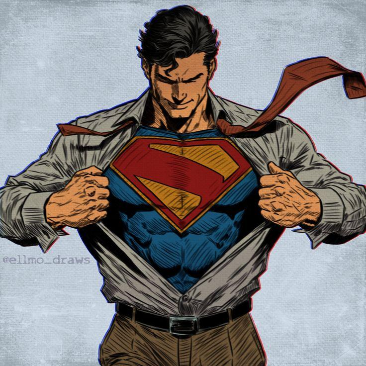
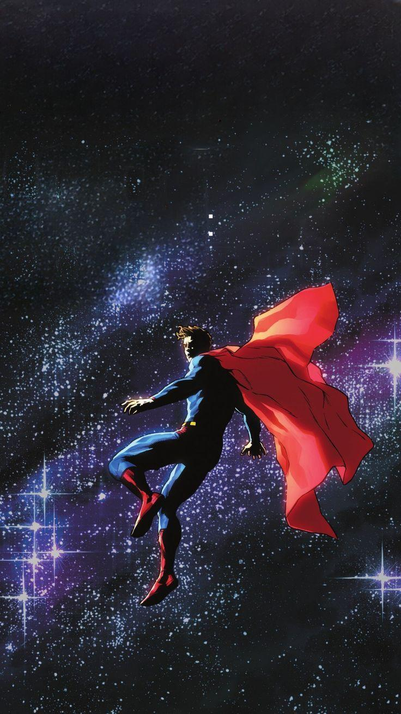
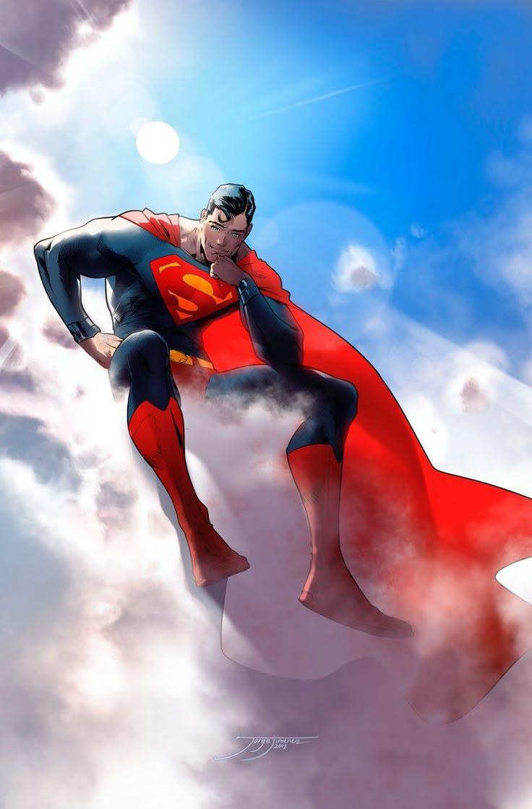
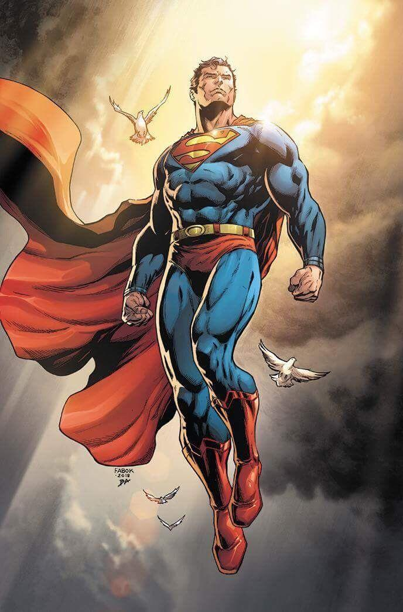
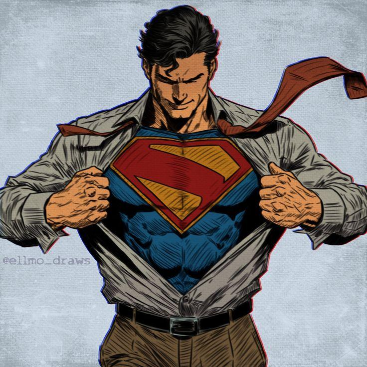

Enviado de bebé a la Tierra desde el moribundo planeta Krypton, Kal-El fue adoptado por Martha y Jonathan Kent de Smallville, Kansas. Creciendo como Clark Kent, dedicó su vida a ayudar a otros con las habilidades que desarrolló a partir del sol de la Tierra. Al mudarse a Metrópolis, se convirtió en Superman, manteniendo aún su identidad secreta como Clark Kent, que trabaja en el Daily Planet
Ver mas inforación
 






